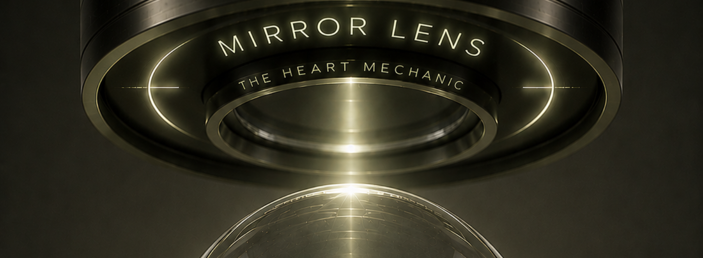
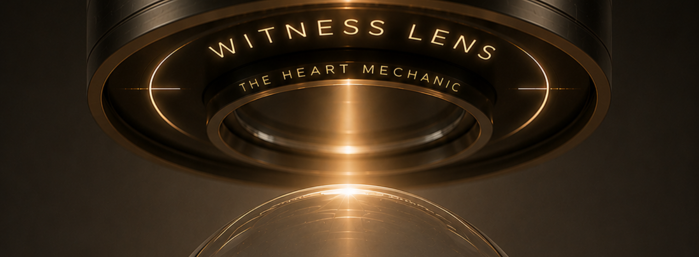
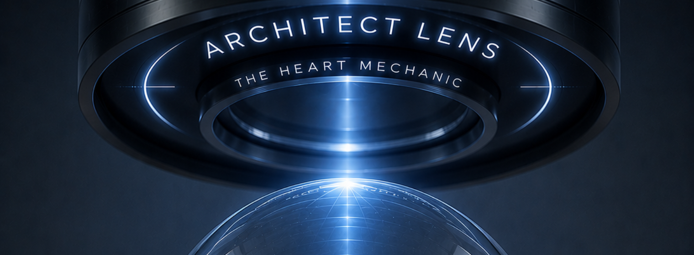
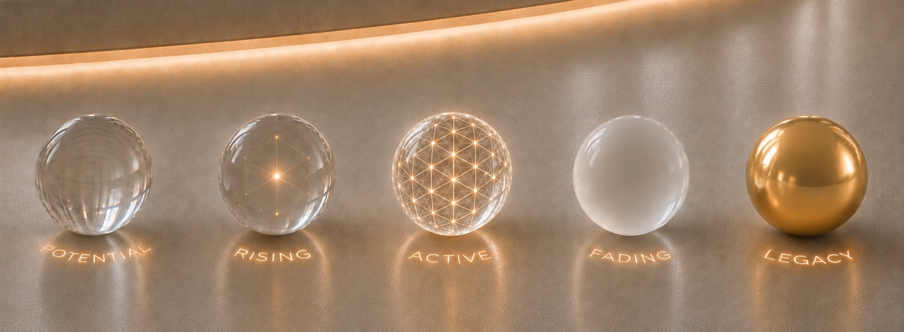

The Kingdom is ready to rise.
Begin the first activation, then enter the map.
Begin mapping
the relationships
that shape your life.
Start with the people who feel significant right now: those you love, those who challenge you, and those who still occupy emotional space. The map will deepen as the work unfolds.
Preview tools
Privacy aliases
Share the map without exposing real names.
Choose an alias library for this map. New relationships receive the next unused alias automatically, and each alias can still be edited by hand.
Save Session
Not saved yet

Week 1: Mirror Lens
Who is present in your relational field?
Start with the first 10-20 people who carry real significance.
You can add more each week as the course reveals them.
Not started
Add people for this session
Think of 5 people you are close to or deeply care about. Then 3 people you find challenging. Then 2-3 people who are in your life, but not central.
Add from a phone list or Airtable
Optional. Use this only as a memory aid. Imported names stay outside the map unless you choose to add them.
Your contacts are used only to create your personal Kingdom map. This prototype stores them locally in your browser unless backend storage is added later.
Mirror Signals
Name the first emotional signal. Nothing else needs to be completed this week.
Background list
No contacts added yet.
If you imported a large list, do not process all of it. Tap only the names that become relevant. Everyone else can stay outside the map for now.
Week 1 complete
Mirror Lens complete.
You have named the first emotional signal for your first people.
Use this as a seal. Week 1 is complete enough to move forward.


Week 2: Witness Lens
Who are they in your world now?
Add the relational context: public alias, relationship type and current status. The Mirror signal stays visible.
Locked
Add anyone newly relevant
Each week, the map can expand gently. Add people only when they become useful to the work.
Map Overview
A clear session view, close to Airtable in clarity, but lighter in feeling.
Week 2 complete
Witness Lens complete.
You have named the relational context for your first people.
Use this as a seal. Week 2 is complete enough to move into the first architecture.

Week 3: Architect Lens
Where do they belong in the structure?
Begin placing people into the first architecture. This is not an assessment; it is the first visible structure of the relational field.
Locked
Add anyone newly relevant
If someone becomes important during placement, add them here. They will enter the Architect map as unplaced.
Map Overview
Drag a person into a column. On mobile, tap a person first, then tap the destination column.
Week 3 complete
Architect Lens complete.
You now have your first Kingdom Map.
This is a living, breathing map. It will continue to change as your relationships change, and it can become a diagnostic tool you use for life.
Week 4: The Mechanic
What is shifting in the structure?
Edit in columns. Reveal as map. The Mechanic layer lets you notice movement without rebuilding the structure from scratch.
Locked

The Mechanics
Move people between states, open profiles when detail matters, then reveal the architecture in The Living Map.
Design Lab
A calmer premium Week 4 direction.
This is a non-destructive mockup. It does not use or change your saved map.
Nobles
Significance, history, wisdom.

Aldebaran
Friend · Grounded

Europa
Family · Unclear
Noble Fading
Still meaningful, but moving away from present access.

Saturn
Friend · Distant
The Hold
Pause, observe, reassess.

Mercury
Community · Activated
The Living Map
The Kingdom as living architecture.
Open this view when you want the emotional architecture to become visible.
Map Activation
The Kingdom collapses into the living map.

The Living Map
Edit in columns. Open the map when you want the emotional architecture to become visible.
Future weeks
The system opens progressively.
Week 4 now has a first Mechanic layer. Weeks 5-6 remain visible for orientation only.
Week 4: The Mechanic
Noble Fading and The Hold begin here. Deeper mechanic states will be added later.
Week 5: Oracle
Legacy, transition and shedding are outside MVP 1.
Week 6: Sovereignty
Sovereign Summary and Sovereign Seal are reserved for a future release.